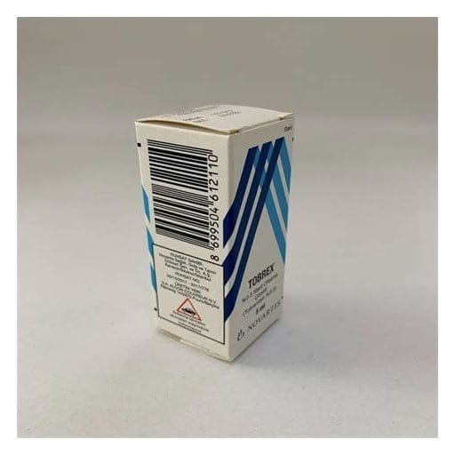

Tobrex % 0.3 Steril Oftalmik Çözelti, 5 ml

Ne için kullanılır
KT · Bölüm 1TOBREX, gözün/gözlerin ve etrafının yüzeysel bakteriyel infeksiyonlarının tedavisinde kullanılır.
TOBREX anti-infektifler adı verilen ilaç grubunda yer almaktadır. Anti-infektifler grubu göz(ler)e hastalık bulaştıran mikroorganizmaların büyük bir kısmına karşı aktif olan antibiyotikleri (bu üründe tobramisin) içerir.
TOBREX, plastik burgu kapaklı kendinden damlalıklı plastik şişede 5 ml çözelti içeren bir kutuda sunulur. Berrak, renksiz-soluk sarı veya kahverengi renkli bir çözeltidir.
Sayfa 2/7